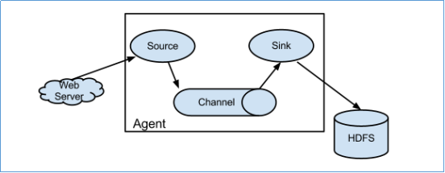
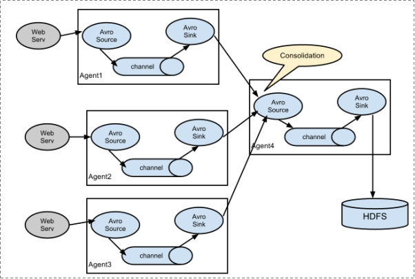

2. Apache Flume¶
2.1. 概述¶
官网:http://flume.apache.org/
Flume 是 Cloudera 提供的一个高可用的，高可靠的，分布式的海量日志采集、聚合和传输的工具。基于流式架构，容错性强，也很灵活简单。 Flume可以采集文件，socket数据包、文件、文件夹、kafka等各种形式源数据，又可以将采集到的数据(下沉sink)输出到HDFS、hbase、hive、kafka等众多外部存储系统中，一般的采集需求，通过对flume的简单配置即可实现 Flume针对特殊场景也具备良好的自定义扩展能力，因此，flume可以适用于大部分的日常数据采集场景。
Flume是一个海量数据采集的软件。
Flume是一款来自于apache java语言软件。
Flume身世
0.9- 属于Cloudera 叫做flume-og
1.0+ 属于apache 叫做flume-ng
2.2. 组件架构¶
1、Flume分布式系统中最核心的角色是agent，agent 本身是一个 Java 进程，一般运行在日志收集节点。flume采集系统就是由一个个agent所连接起来形成。 2、每一个agent相当于一个数据传递员，内部有三个组件： a)Source：采集组件，用于跟数据源对接，以获取数据 b)Sink：下沉组件，用于往下一级agent传递数据或者往最终存储系统传递数据 c)Channel：传输通道组件，用于从source将数据传递到sink
简单结构

Source 到 Channel 到 Sink之间传递数据的形式是Event事件；Event事件是一个数据流单元
复杂结构
多级agent之间串联

部署架构
单agent架构
适合简单业务场景 只需要部署一个agent进程即可
多agent级联（串联）
适合复杂业务场景 在此场景下 各个agent之间没有地位区别 大家都一样。没有主从之分。 因为在多台机器部署的 也称之为分布式架构。
数据流程
Flume的一般流程是这样的:
source监控某个文件或数据流，数据源产生新的数据，拿到该数据后，将数据封装在一个Event中，并发送到channel后提交，channel队列先进先出，sink去channel队列中拉取数据，然后写入到HDFS/Kafka/或者其他的数据源,甚至是下一个Agent的Source。
组件
source
对接各个不同的数据源。 采集数据。
常用的Source有:
1) exec：可通过tail -f命令去tail一个文件，然后实时同步日志到sink
2) spooldir：可监听一个目录，同步目录中的新文件到sink,被同步完的文件可被立即删除或被打上标记。 适合用于同步新文件，但不适合对实时追加日志的文件进行监听并同步。
3) taildir：可实时监控一批文件，并记录每个文件最新消费位置，agent进程重启后不会有重复消费的问题
4) 支持自定义
channel
就是source和sink之间缓存数据的通道。
Channel是Agent 内部的数据传输通道，用于从 source 将数据传递到 sink；用于桥接Sources和Sinks， 类似于一个队列/缓存。Channel分为:
1) Memory Channel是基于内存的,速度快
2) File Channel是基于文件的,速度慢,因为会将所有事件写到磁盘,但数据更安全
sink
对接各个不同下沉地(目的地)
Sink是下沉地/目的地，采集数据的传送目的地，用于从Channel收集数据，将数据写到目标源,Sink分为:
1) 可以是HDFS、HBase、Kafka等
2) 也可以是下一个 FlumeAgent的Source
3) 支持自定义
结论：上述3个组件就组成了flume的一个java进程。该进程的名字叫做agent。
Event
event是flume内部最小的数据单元。
flume采集的数据都是以event形式存在的。类似于数据包。
event分为event head /event body 数据都是存储在body中。
Event: { headers:{} body: 6E 69 68 61 6F 0D }
2.3. Flume 安装¶
提取将JDK配置好
上传安装包进行解压
tar -zxvf flume-ng-1.6.0-cdh5.14.0.tar.gz -C /export/servers/
配置文件
cd /export/servers/apache-flume-1.6.0-cdh5.14.0-bin/conf
cp flume-env.sh.template flume-env.sh
vim flume-env.sh
export JAVA_HOME=/export/servers/jdk1.8.0_141
配置成自己得JDK安装版本和安装目录
2.4. 案例¶
2.4.1. 入门案例¶
需求：采集日志文件 如果有数据发送 采集数据打印到控制台。
2.4.1.1. 配置文件编写¶
所谓的采集方案指的就是根据业务需求 确定3个组件的类型和参数。 flume只有根据采集方案文件才指的如何工作。
确定3个组件
source: TAILDIR 读取文件 channel:memory channel 缓存在内存中 sink: logger 把数据打印到控制台 基于上述3个类型组件 编写采集方案。
cd /export/servers/apache-flume-1.6.0-cdh5.14.0-bin/conf/
vim console-logger.conf
# Name the components on this agent
# 先定义这个agent中各组件的名字 a1
# 再给3个组件 分别起名字
a1.sources = r1
a1.sinks = k1
a1.channels = c1
# Describe/configure the source
# 描述和配置source组件：r1
a1.sources.r1.type = TAILDIR
a1.sources.r1.filegroups = f1
a1.sources.r1.filegroups.f1 = /export/servers/tmp/flume/orderinfo.log
# Describe the sink
# 描述和配置source组件：r1
a1.sinks.k1.type = logger
# Use a channel which buffers events in memory
# 描述和配置channel组件，此处使用是内存缓存的方式
a1.channels.c1.type = memory
a1.channels.c1.capacity = 1000
a1.channels.c1.transactionCapacity = 100
# Bind the source and sink to the channel
# 描述和配置source channel sink之间的连接关系
a1.sources.r1.channels = c1
a1.sinks.k1.channel = c1
各组件得名称可以自定义
2.4.1.3. Flume启动命令¶
#完整版命令
bin/flume-ng agent --conf conf --conf-file conf/console-logger.conf --name a1 -Dflume.root.logger=INFO,console
#精简版命令
bin/flume-ng agent -c ./conf -f ./conf/console-logger.conf -n a1 -Dflume.root.logger=INFO,console
#bin/flume-ng agent 固定搭配
#--conf（-c）
指定默认的配置文件路径 要求改路径下 必须有两个文件：flume-env.sh log4j.properties
#--conf-file （-f）
指定采集方案文件路径
#--name 指定agent的名字 进程名称 （-n）
该名称可以随便起 但是要保证和采集方案中一致
#-Dflume.root.logger=INFO,console
开启日志 打印更详细的信息 在开发中建议打开
–name 指定agent的名字表示进程名称，一定
2.4.2. 采集数据到HDFS¶
案例1
需求：某目录下，会不断产生新的文件，每当有新文件出现，就需要把文件采集到 HDFS中去
确定agent组件
source: TAILDIR channel: memory channel sink: HDFS sink
2.4.2.1. 配置文件编写¶
cd /export/servers/apache-flume-1.6.0-cdh5.14.0-bin/conf
vim fileToHdfs.conf
#为我们的source channel sink起名
a1.sources = r1
a1.channels = c1
a1.sinks = s1
#指定我们的source收集到的数据发送到哪个管道
a1.sources.r1.channels = c1
#指定我们的source数据收集策略
a1.sources.r1.type = TAILDIR
a1.sources.r1.filegroups = f1
a1.sources.r1.filegroups.f1 = /export/servers/tmp/flume/orderinfo.log
#指定我们的channel为memory,即表示所有的数据都装进memory当中
a1.channels.c1.type = memory
#指定我们的sink为kafka sink，并指定我们的sink从哪个channel当中读取数据
a1.sinks.s1.channel = c1
a1.sinks.s1.type=hdfs
a1.sinks.s1.hdfs.path=hdfs://node1:8020/tmp/flume
a1.sinks.s1.hdfs.fileType=DataStream
2.4.2.3. Flume启动命令¶
#精简版命令
bin/flume-ng agent -c ./conf -f ./conf/fileToHdfs.conf -n a1 -Dflume.root.logger=INFO,console
2.4.2.4. 优化配置¶
配置参数介绍
#roll 控制文件以何种形式触发滚动 写入新文件 a1.sinks.k1.hdfs.rollInterval = 3 #以时间间隔控制滚动 默认30 s a1.sinks.k1.hdfs.rollSize = 20 #以文件大小控制滚动 默认1024 bytes a1.sinks.k1.hdfs.rollCount = 5 #以event数量控制滚动 默认 10 个 #上述三个都配置的情况下 如果滚动？ 谁先满足 谁触发滚动。 #如果不想以某个属性滚动。 就把该属性设置为0 禁用该属性滚动。 #注意事项 如果滚动条件设置不合理 会频繁触发文件切换 会造成大量小文件产生 #在实际开发中 避免小文件产生 最喜欢根据128M大小进行滚动 134217728 #round 是否开启时间上的舍弃 通俗解释：多少时间切换新的文件夹 a1.sinks.k1.hdfs.round = true a1.sinks.k1.hdfs.roundValue = 10 a1.sinks.k1.hdfs.roundUnit = minute
注意事项 因为在flume中涉及到了动态提取时间**的功能 需要做下面两件事中任一即可：
/flume/events/%y-%m-%d/%H%M/
开启使用本地时间戳
a1.sinks.k1.hdfs.useLocalTimeStamp = true
完整配置文件
cd /export/servers/apache-flume-1.6.0-cdh5.14.0-bin/conf
vim fileToHdfs2.conf
a1.sources = r1
a1.channels = c1
a1.sinks = s1
#指定channel
a1.sources.r1.channels = c1
#指定我们的source数据收集策略
a1.sources.r1.type = exec
a1.sources.r1.command = tail -f /export/servers/tmp/flume/test.log
#指定我们的channel为memory,即表示所有的数据都装进memory当中
a1.channels.c1.type = memory
#指定我们的sink到s1，并指定我们的sink从c1当中读取数据
a1.sinks.s1.channel = c1
a1.sinks.s1.type=hdfs
a1.sinks.s1.hdfs.path=hdfs://node1:8020/tmp/flume/%y-%m-%d/%H-%M/
a1.sinks.s1.hdfs.fileType=DataStream
a1.sinks.s1.hdfs.rollInterval = 3
a1.sinks.s1.hdfs.rollSize = 20
a1.sinks.s1.hdfs.rollCount = 5
a1.sinks.s1.hdfs.round = true
a1.sinks.s1.hdfs.roundValue = 10
a1.sinks.s1.hdfs.roundUnit = minute
a1.sinks.s1.hdfs.useLocalTimeStamp = true
a1.sinks.s1.hdfs.filePrefix = test
a1.sinks.s1.hdfs.fileSuffix = log
模拟日志增量数据
日志内容不断增加，需要把采集数据追到日志文件中，并实时写入到 hdfs
确定3个组件
source: exec #支持在flume中运行shell命令 把命令执行的结果作为数据源进行采集。 shell：tail -f 文件路径 channel: memory channel 基于内存缓存数据 sink: hdfs sink
编写增量日志脚本
cd /export/servers/tmp/flume
vim shell_log.sh
while true;do date >> /export/servers/tmp/flume/test.log;sleep 0.5;done #!/bin/bash while true do date >> /export/servers/tmp/flume/test.log sleep 0.5 done
sh脚本赋权限：chmod 755 shell_log.sh
执行脚本：
sh shell_log.sh
查看日志：
tail -f /export/servers/tmp/flume/test.log
启动flume命令：
bin/flume-ng agent -c ./conf -f ./conf/fileToHdfs2.conf -n a1 -Dflume.root.logger=INFO,console
2.4.3. 采集数据到Kafka¶
2.4.3.1. 配置文件编写¶
cd /export/servers/apache-flume-1.6.0-cdh5.14.0-bin/conf
vim fileToKafka.conf
#为我们的source channel sink起名
a1.sources = r1
a1.channels = c1
a1.sinks = k1
#指定我们的source收集到的数据发送到哪个管道
a1.sources.r1.channels = c1
#指定我们的source数据收集策略
a1.sources.r1.type = TAILDIR
a1.sources.r1.filegroups = f1
a1.sources.r1.filegroups.f1 = /export/servers/tmp/flume/orderinfo.log
#指定我们的channel为memory,即表示所有的数据都装进memory当中
a1.channels.c1.type = memory
#指定我们的sink为kafka sink，并指定我们的sink从哪个channel当中读取数据
a1.sinks.k1.channel = c1
a1.sinks.k1.type = org.apache.flume.sink.kafka.KafkaSink
a1.sinks.k1.kafka.topic = test2
a1.sinks.k1.kafka.bootstrap.servers = node1:9092,node2:9092,node3:9092
a1.sinks.k1.kafka.flumeBatchSize = 20
a1.sinks.k1.kafka.producer.acks = 1
2.4.3.3. Flume启动命令¶
#精简版命令
bin/flume-ng agent -c ./conf -f ./conf/fileToKafka.conf -n a1 -Dflume.root.logger=INFO,console
2.4.3.4. kafka消费命令¶
bin/kafka-console-consumer.sh --bootstrap-server node1:9092,node2:9092,node3:9092 --topic test2